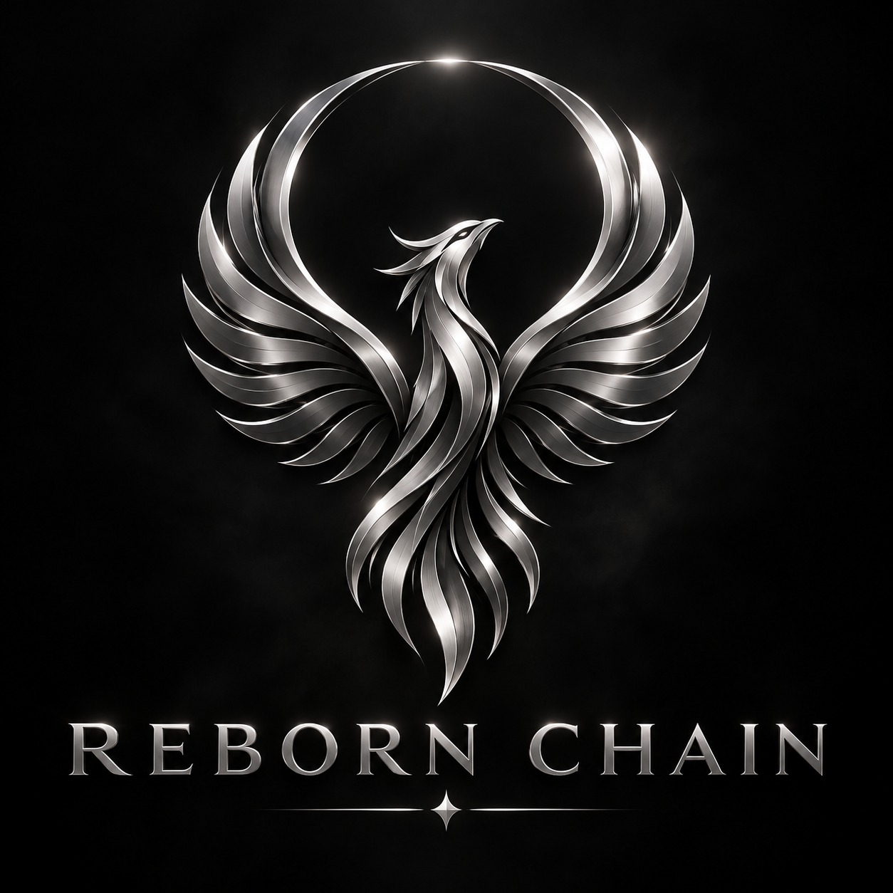

BUILT FOR THE NEXT CHAPTER
Give Your Coin
a Second Chance
A dormant chain doesn’t have to be a dead end. We aim to help overlooked coins rebuild their foundations, reconnect their communities and work towards lasting utility.
Long-term vision. Project-by-project review. No guaranteed outcomes.

01 / OUR MISSION
Potential deserves
another chapter.
Reborn Chains is built around a long-term goal: helping revive coins and the use cases that give them purpose.
Our intended approach brings technical assessment, infrastructure planning and community participation together. Each proposal is considered individually, with realistic expectations about what can be restored and sustained.
A relaunch is only a beginning. Lasting progress depends on ongoing development, useful applications and people who choose to participate.
02 / HOW IT WORKS
A clear path forward.
Six proposed stages.
One project-specific agreement.
- 01
Submit your coin
Share the coin’s name, ticker, chain status, source code and community links. Explain what needs support and the use cases worth rebuilding.
- 02
Project review
We assess technical feasibility, available infrastructure and community readiness. Submission does not guarantee acceptance.
- 03
Agree the contribution
The proposed contribution is one masternode, plus an additional negotiable amount of coins. Collateral, transfer arrangements and all terms must be agreed in writing before any contribution.
- 04
Launch & explorer integration
Work towards launching the agreed program and integrating a block explorer, subject to the chain’s technical condition and available resources.
- 05
Exchange listing
Pursue a suitable exchange listing where feasible. Approval, timing, fees and continued availability depend on the exchange; no listing is promised.
- 06
Genuine trading activity
Support awareness, utility and voluntary market participation. No wash trading, artificial volume or price manipulation. Trading interest and liquidity cannot be guaranteed.
The sequence is indicative. Scope, responsibilities, costs and milestones are defined for each accepted project.
03 / BUYBACK PROGRAM
Support with
a longer horizon.
PROPOSED FRAMEWORK · NOT ACTIVEA project-specific buyback may form part of an agreed revival plan.
Any program would require published terms covering funding, eligible coins, purchase method, limits and reporting before it starts. No budget, schedule or purchase commitment is currently announced.
Buybacks depend on available resources and market conditions. They do not establish a price floor, guarantee liquidity or promise a return, and may be changed, paused or discontinued under the published terms.
04 / SUPPORTED COINS
Room for a new beginning.
Confirmed projects will appear here
with verifiable details.
No supported coins announced
No partnerships, accepted projects or live integrations are confirmed on this site.
Your project could be next
Illustrative placeholder only. Acceptance is subject to review and written terms.
05 / START A CONVERSATION
Submit Your Coin
Tell us what your chain could become.
Submissions are not open yet. A verified contact channel will be published here before proposals are accepted.
Contact Reborn Chains ↗Prepare your proposal
Include your coin name and ticker, official website and repository, explorer (if available), current chain status, masternode requirements, community links, your role and proposed use cases.
Do not include private keys, seed phrases or passwords. Do not transfer coins before verified contact and written terms.
This static page does not collect, store or send submissions.
Risk & disclaimer
Cryptocurrencies are highly speculative and may lose all value. Revival efforts, masternodes, contributions and buybacks involve technical, operational, security, regulatory and market risks. There are no guarantees of project acceptance, successful relaunch, exchange listing, trading volume, liquidity, price appreciation or returns. Contributions may be lost and may not be recoverable. This website is informational and is not investment advice or an offer of financial products. Assess each project independently and seek appropriate professional advice before making a decision.